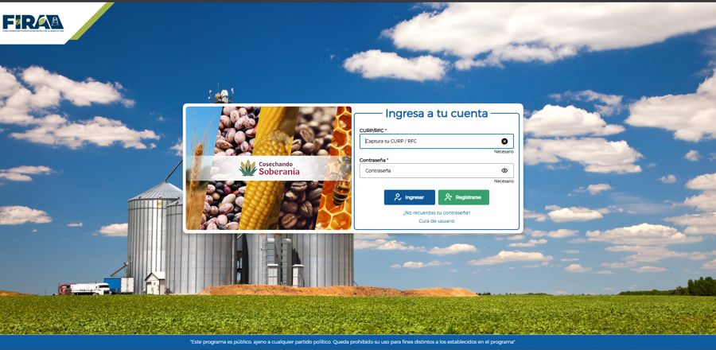
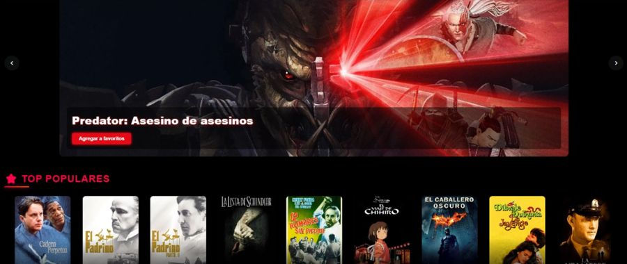
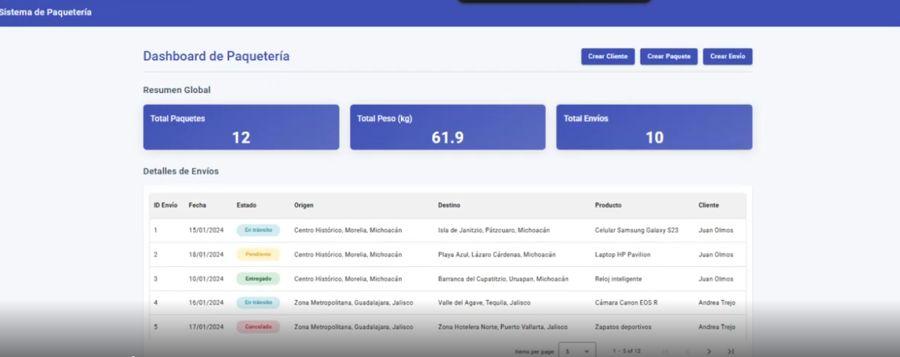

Ingeniero de Software | Backend & Full Stack Developer
Desarrollo aplicaciones web y sistemas empresariales escalables, seguras y de alto rendimiento. Especializado en soluciones con Java, Spring Boot, Oracle, JavaScript, Angular, React, Node.js y PostgreSQL.
Ingeniero de Sistemas orientado a resultados. Trabajo bajo metodologías ágiles como Scrum y Kanban, priorizando entregas de valor, código mantenible y buena comunicación.
Me apoyo en IA para análisis técnico, optimización de código, documentación y toma de decisiones — aumentando productividad sin perder calidad.
De sistemas gubernamentales a liderazgo de TI — construyendo siempre sobre datos.
Organizado como lo que realmente construyo: un esquema de relaciones entre capas.
Desarrollo y asesoro aplicaciones web y sistemas a medida, de la interfaz a la base de datos.
Trabajo real en producción y proyectos personales, de punta a punta.

Apoyé en el front-end y en la actualización a la versión más reciente de Oracle JET, como parte de mi trabajo en FIRA.
Ver proyecto ↗
Backend y frontend completos: seguridad con JWT y Spring Security, Angular 18 en el cliente y Oracle como base de datos.
Ver en GitHub ↗
Aplicación full stack para gestionar el inventario de un almacén, con frontend en Angular y backend en Spring Boot sobre PostgreSQL.
Ver en GitHub ↗Formación continua en desarrollo, bases de datos y seguridad.
Hablemos y llevemos tu idea al siguiente nivel.